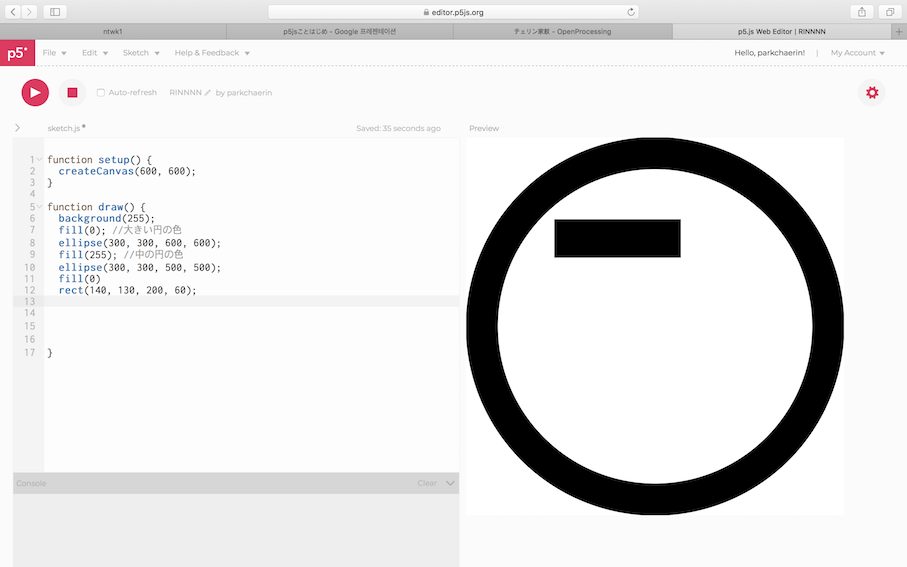

🌟ᴘ5ᴊs🌟
🔆今回の課題は、家紋を作るものである。p５jsを使って作った。まず、このプログラムを使うときは上下の横に位置をよく合わせなければならない。 そして背景色たい図形の色をよくする必要があります。また、韓国は家ってなくて、私は自分の家を作った。私の名前でリンをハングルで書いていた。 他の家を探してみると、ほぼすべての円員があるからまずはウォンから作った。図を見れば分かるようにスラッシュをしたいゴルソくれれば良い。

🔆次的には린のトップに部分である。 rectを使って上下横の部分を決めればされる。だから一番左側の上部に作った。
🔆この方法で、四角形のサイズを調整して、位置を調整しながら린を四角形に合わせた。린の形が完成した。
<反省点・改善点・分かったこと>
🔆最初はわかりにくかってさまよった。しかし、一つ一つやっている調節してみると分かるようになった。 最初は難しいがみるほど理解がされてよかっただった。このプログラムでは困難な技術はまだわからないがより学んさらに困難効果のある技術で何かを作ってみたい。